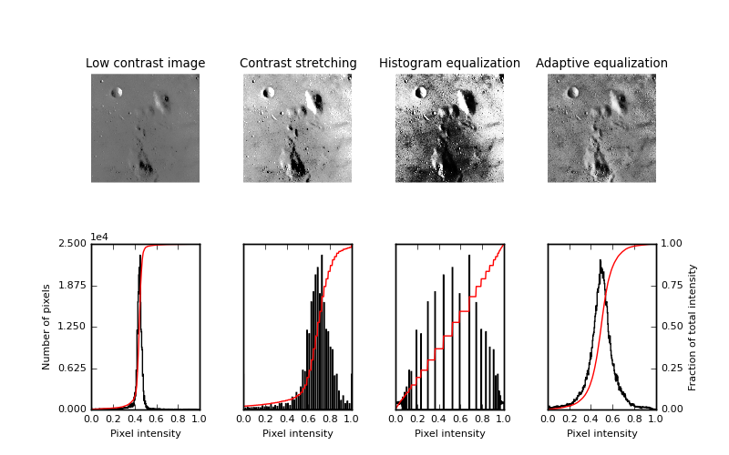

Most functions for manipulating color channels are found in the submodule skimage.color.
Color images can be represented using different color spaces. One of the most common color spaces is the RGB space, where an image has red, green and blue channels. However, other color models are widely used, such as the HSV color model, where hue, saturation and value are independent channels, or the CMYK model used for printing.
skimage.color provides utility functions to convert images to and from different color spaces. Integer-type arrays can be transformed to floating-point type by the conversion operation:
>>> # bright saturated red
>>> red_pixel_rgb = np.array([[[255, 0, 0]]], dtype=np.uint8)
>>> color.rgb2hsv(red_pixel_rgb)
array([[[ 0., 1., 1.]]])
>>> # darker saturated blue
>>> dark_blue_pixel_rgb = np.array([[[0, 0, 100]]], dtype=np.uint8)
>>> color.rgb2hsv(dark_blue_pixel_rgb)
array([[[ 0.66666667, 1. , 0.39215686]]])
>>> # less saturated pink
>>> pink_pixel_rgb = np.array([[[255, 100, 255]]], dtype=np.uint8)
>>> color.rgb2hsv(pink_pixel_rgb)
array([[[ 0.83333333, 0.60784314, 1. ]]])
Converting an RGB image to a grayscale image is realized with rgb2gray()
>>> from skimage.color import rgb2gray
>>> from skimage import data
>>> img = data.astronaut()
>>> img_gray = rgb2gray(img)
rgb2gray() uses a non-uniform weighting of color channels, because of the different sensitivity of the human eye to different colors. Therefore, such a weighting ensures luminance preservation from RGB to grayscale:
>>> red_pixel = np.array([[[255, 0, 0]]], dtype=np.uint8)
>>> color.rgb2gray(red_pixel)
array([[ 0.2125]])
>>> green_pixel = np.array([[[0, 255, 0]]], dtype=np.uint8)
>>> color.rgb2gray(green_pixel)
array([[ 0.7154]])
Converting a grayscale image to RGB with gray2rgb() simply duplicates the gray values over the three color channels.
label2rgb() can be used to superimpose colors on a grayscale image using an array of labels to encode the regions to be represented with the same color.
Image pixels can take values determined by the dtype of the image (see Image data types and what they mean), such as 0 to 255 for uint8 images or [0, 1] for floating-point images. However, most images either have a narrower range of values (because of poor contrast), or have most pixel values concentrated in a subrange of the accessible values. skimage.exposure provides functions that spread the intensity values over a larger range.
A first class of methods compute a nonlinear function of the intensity, that is independent of the pixel values of a specific image. Such methods are often used for correcting a known non-linearity of sensors, or receptors such as the human eye. A well-known example is Gamma correction, implemented in adjust_gamma().
Other methods re-distribute pixel values according to the histogram of the image. The histogram of pixel values is computed with skimage.exposure.histogram():
>>> image = np.array([[1, 3], [1, 1]])
>>> exposure.histogram(image)
(array([3, 0, 1]), array([1, 2, 3]))
histogram() returns the number of pixels for each value bin, and the centers of the bins. The behavior of histogram() is therefore slightly different from the one of np.histogram(), which returns the boundaries of the bins.
The simplest contrast enhancement rescale_intensity() consists in stretching pixel values to the whole allowed range, using a linear transformation:
>>> from skimage import exposure
>>> text = data.text()
>>> text.min(), text.max()
(10, 197)
>>> better_contrast = exposure.rescale_intensity(text)
>>> better_contrast.min(), better_contrast.max()
(0, 255)
Even if an image uses the whole value range, sometimes there is very little weight at the ends of the value range. In such a case, clipping pixel values using percentiles of the image improves the contrast (at the expense of some loss of information, because some pixels are saturated by this operation):
>>> moon = data.moon()
>>> v_min, v_max = np.percentile(moon, (0.2, 99.8))
>>> v_min, v_max
(10.0, 186.0)
>>> better_contrast = exposure.rescale_intensity(
... moon, in_range=(v_min, v_max))
The function equalize_hist() maps the cumulative distribution function (cdf) of pixel values onto a linear cdf, ensuring that all parts of the value range are equally represented in the image. As a result, details are enhanced in large regions with poor contrast. As a further refinement, histogram equalization can be performed in subregions of the image with equalize_adapthist(), in order to correct for exposure gradients across the image. See the example Histogram Equalization.
Examples:
 Source
Source